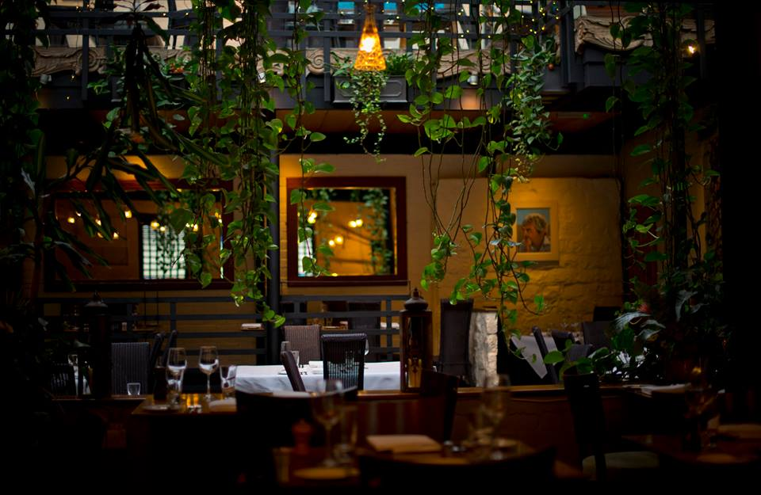
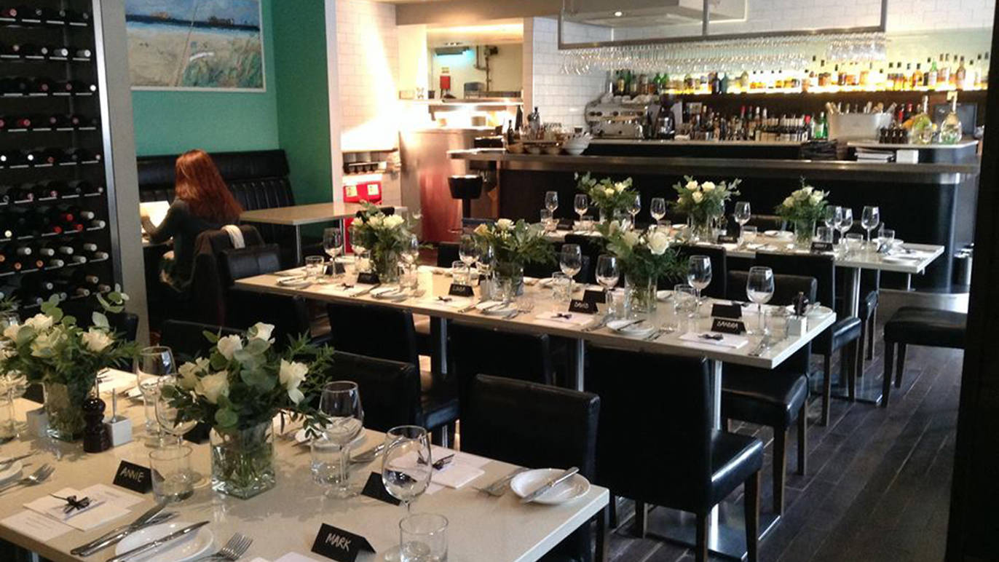
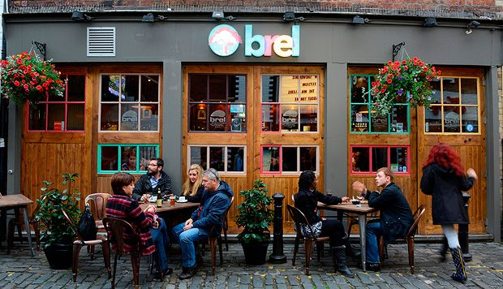
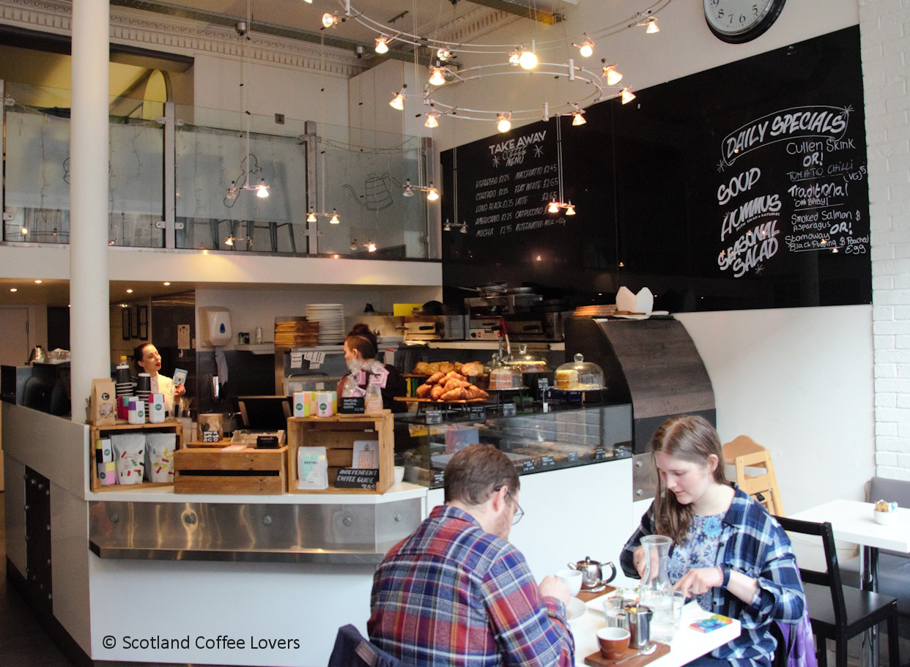
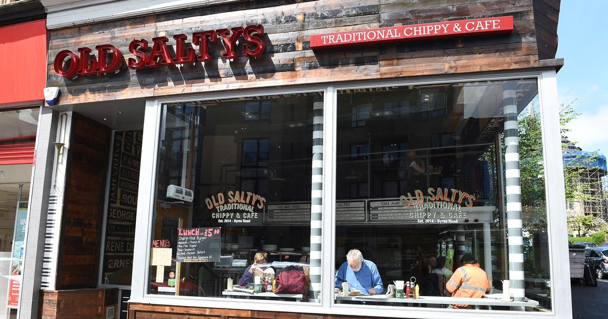
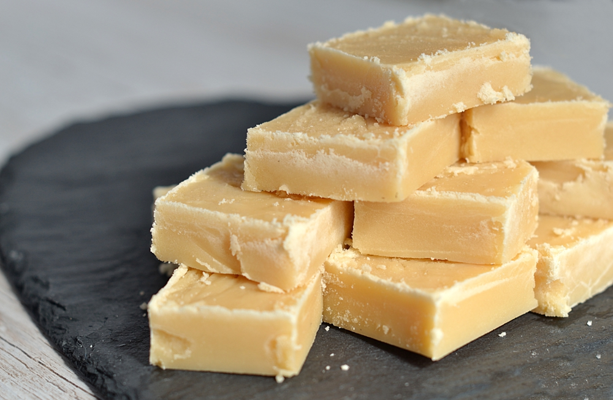
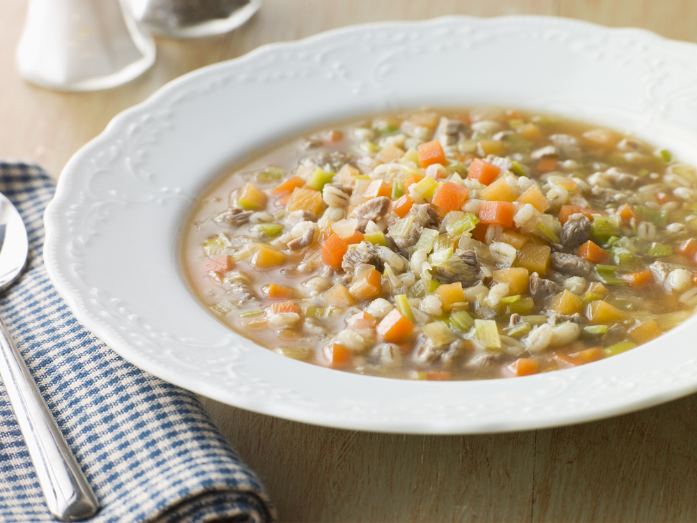
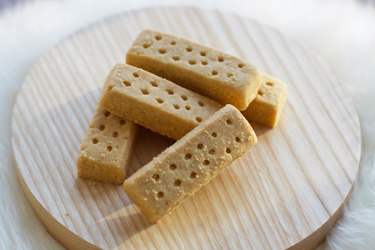

Eat out or make your own authentic Scottish cuisine.
Ubiquitous Chip
Artistic brasserie located in the West End of Glasgow.
Address:
12 Ashton Lane
Glasgow
G12 8SJ

Gandolfi Fish
Smart, comfortable space with a classic menu and some unusual twists, where fresh seafood is key.
Address:
84-86 Albion Street
Glasgow
G1 1NY

Brel
Belgian mews bar for beers and food with bold blue doors opening onto outdoor cobbled seating area.
Address:
37-43 Ashton Lane
Glasgow
G12 8SJ

Turadh
Scottish-styled cafe with tasty treats, fine pieces, and rolls.
Address:
291 Byres Road
Glasgow
G12 8TJ

Old Salty's
Classic fish and chips with a West End twist.
Address:
337 Byres Road
Glasgow
G12 8TJ

Tablet
Sweet and sugary Scottish treat.
Ingredients:
2lbs (1 kg) Granulated Sugar
4 oz (113g) Unsalted Butter (NOT Margarine)
One 14oz (396g) can of Condensed Milk (NOT Evaporated Milk)
8 fl. oz (227ml) of Milk
1 fl. oz (3 dssp) Natural Vanilla Essence
Directions:
Lightly grease a baking tray (11 x 19 inches works well) with butter and set aside.
Put the sugar and milk into a fairly large, preferably heavy stainless steel saucepan (mixture will double in quantity as it heats).
Stir together.
Add the butter and condensed milk and stir again.
Put pan on medium-high heat and bring mixture to the boil (this usually takes somewhere around 10 mins), stirring occasionally.
Once mixture comes to the boil, reduce the heat until mixture is boiling gently.
Continue to let it boil for around 20 - 30 minutes, still stirring occasionally.
Remove saucepan from the heat and add Vanilla Essence... and now comes the 'elbow grease'... beat the mixture vigorously for 4 - 5 minutes, or until the mixture starts to feel more 'stiff' and 'gritty' under the spoon.
At this point the Tablet is ready to be poured into the baking tray you prepared at the beginning. Allow mixture to cool a little and then mark it off into bars, or squares with a sharp knife.
Tablet is ready to eat when fully cooled.

Scotch Broth
An easy to make warm and hearty soup. Great for keeping warm during the winter.
Ingredients:
250g/8oz carrots, peeled, diced
250g/8oz turnips, diced
2 onions, peeled, diced
1 celery stalk, diced
1 leek, white part only, sliced
75-125g/3-4oz pearl barley
125g/4oz dried peas, soaked in water for 4-5 hours, drained
salt and freshly ground black pepper
2.3litres/4 pints lamb or mutton stock
85g/3oz kale, chopped (optional)
salt and freshly ground black pepper
Directions:
Heat all of the ingredients, except the kale, in a large saucepan until boiling.
Reduce the heat and simmer gently for a 2-3 hours, or until the peas and pearl barley are soft.
Stir in the kale and cook for a further 10-12 minutes, or until the kale is tender. Season, to taste, with salt and freshly ground black pepper.

Shortbread
Traditional biscuit usually served with tea and cakes.
Ingredients:
125g/4oz butter
55g/2oz caster sugar, plus extra to finish
180g/6oz plain flour
Directions:
Heat the oven to 190C/375F/Gas 5.
Beat the butter and the sugar together until smooth.
Stir in the flour to get a smooth paste. Turn on to a work surface and gently roll out until the paste is 1cm/½in thick.
Cut into rounds or fingers and place onto a baking tray. Sprinkle with caster sugar and chill in the fridge for 20 minutes.
Bake in the oven for 15-20 minutes, or until pale golden-brown. Set aside to cool on a wire rack.

Haggis Neeps and Tatties
Classic Scottish meal of haggis, turnip and potatoes. Traditionally served as a Burn's Supper on Burn's Night.
Ingredients:
1 haggis (with natural casing)
400g neeps (aka swede, yellow turnip)
500g tatties (potatoes)
butter
milk (optional)
salt and pepper to taste
Directions:
First, for the haggis: Bring a largeish saucepan of water to the boil. Place the haggis in the pan and lower the heat so that the water simmers gently - you don't want the haggis to burst! Wrapping your haggis in foil can help prevent this. For a 1kg / 2lb haggis, you'll simmer for a good 75 to 90 minutes, but ask your butcher for best results.
Meanwhile, peel your neeps and tatties. Cube them, then boil separately till tender (I start this about half an hour before my haggis is finished). Drain, then mash separately with a good bit of butter. If you like, add a glug of milk to get a smoother consistency. Then add salt and pepper to taste.
Once your haggis is ready, serve alongside the neeps and tatties for a traditional Burns supper.